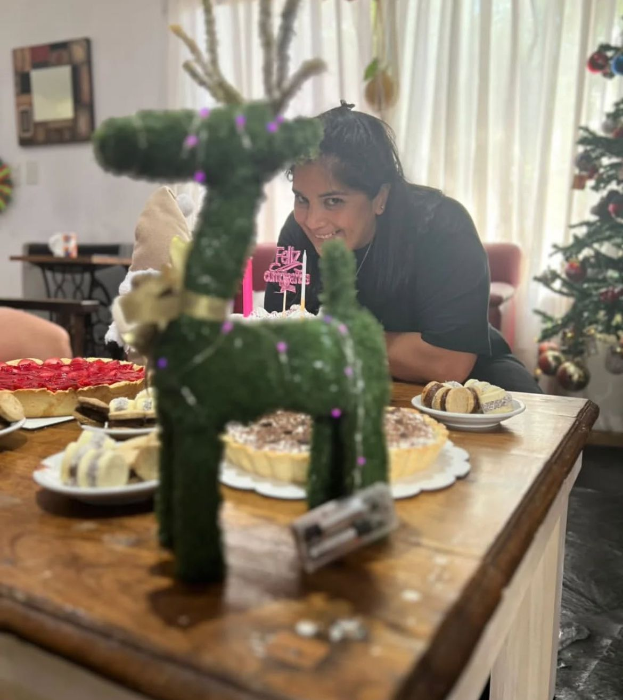

Sobre mi
Hola! Soy Vicky, pastelera que trabaja de manera independiente y artesanal, preparando tortas a gusto y a medida, alfajores de todos los sabores, budines, panes y más. Todo lo realizo desde mi hogar, con esfuerzo, dedicación y mucho amor. Mis dos hijos son mis primeros catadores: prueban cada creación y me inspiran a seguir perfeccionándome. Mi marido es mi gran apoyo, y muchas veces me ayuda con la logística para que cada pedido llegue a tiempo y en perfectas condiciones. Disfruto el contacto con cada cliente, porque sé que detrás de cada pedido hay un momento para celebrar o simplemente un antojo por compartir.
